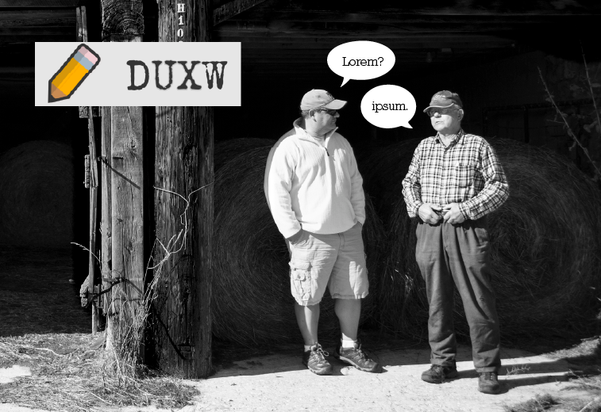
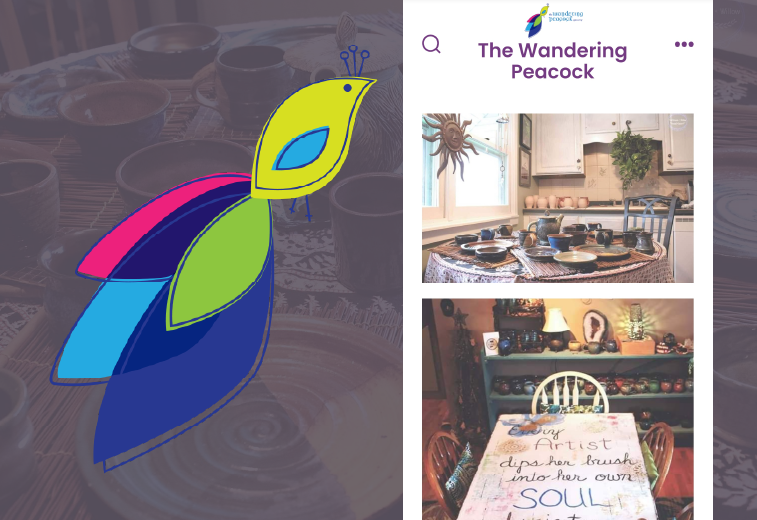
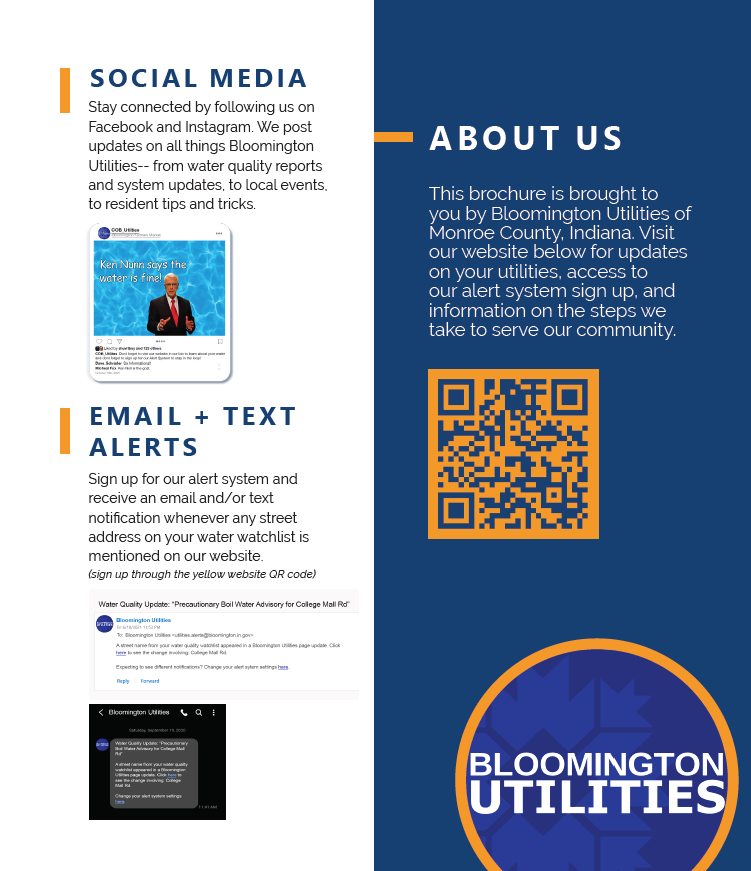
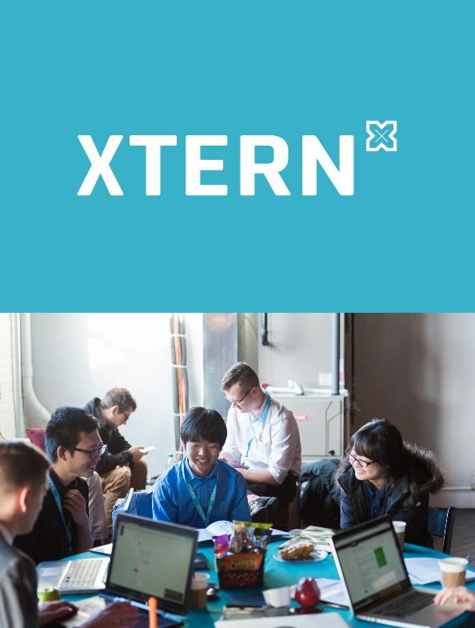
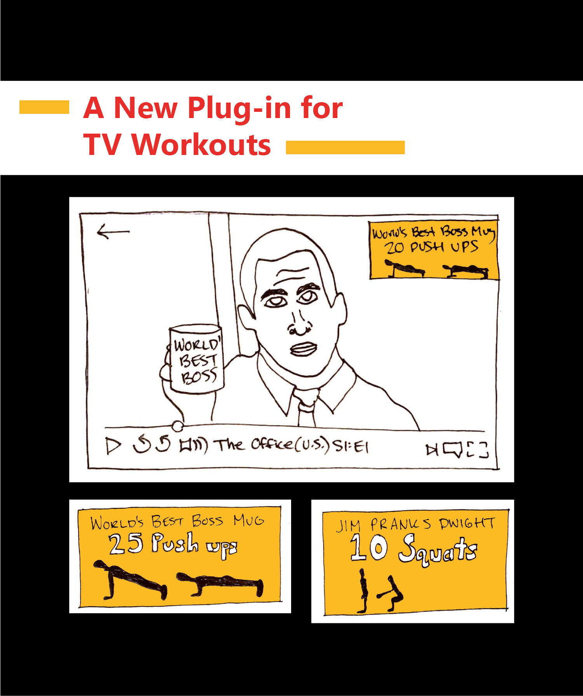
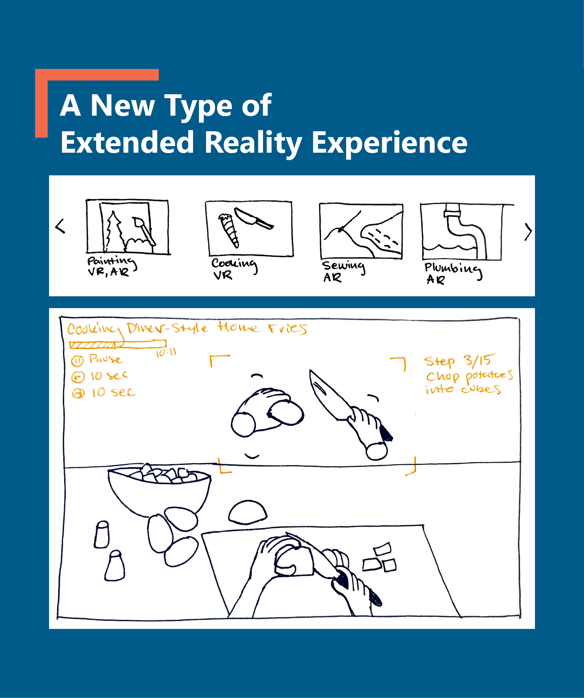
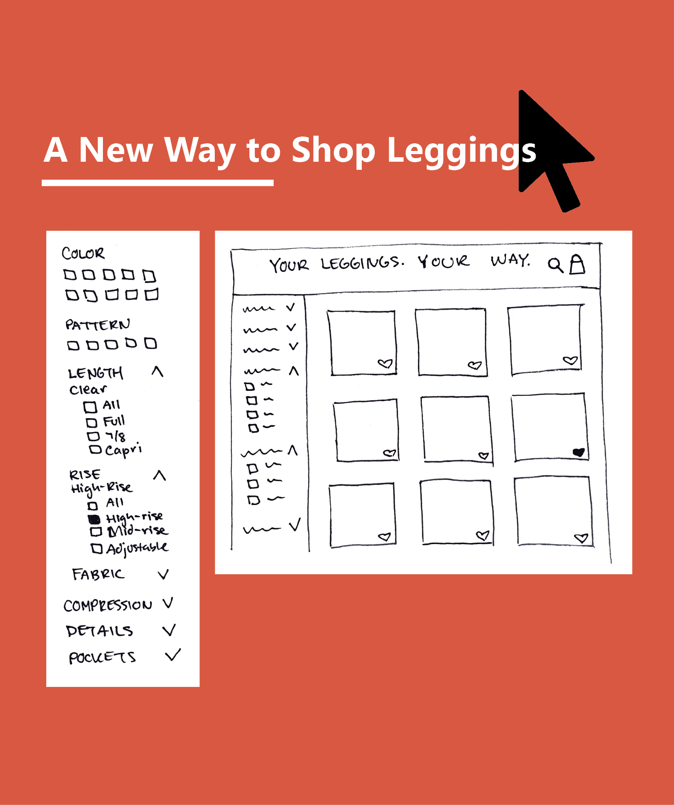

UX Writing Challenge
I participated in a daily UX writing challenge, where every day I received a prompt, set a timer for 10min, wrote some micro-copy, and then generated a visual mockup.
Content Design | Microcopy | UX Design | Mockups

I participated in a daily UX writing challenge, where every day I received a prompt, set a timer for 10min, wrote some micro-copy, and then generated a visual mockup.
Content Design | Microcopy | UX Design | Mockups

I acted as project manager for a team of 7 students as we redesigned a local pottery studio's website. I delegated tasks and kept the owner in the loop as we conducted market research, brainstormed features, developed wireframes, designed prototypes, and ran usability tests.
Heuristic Evaluation | Brand Development | Wireframing | Prototyping | Usability Testing | Web Design

During a course on Interaction Design Thinking, I collaborated with two students on a new communication system between Bloomington residents and water utility companies. We promise the water is fine!
User Research | Online Surveys | Interviews | Prototyping | Usability Testing | Graphic Design | Presentations
I took a web design course where we learned how to "not make people think" when they're visiting your website. I conducted an in-depth usability analysis of escape rooms in the Indy area and c ompiled my findings into a series of design recommendations.
Heuristic Evaluation | Usability Testing | Web Design

During TechPoint's 2021 Xtern Work Assessment, I iterated on an app that would assist Xtern students in finding CoWorking spaces for their virtual internship experiences.
User Research | Competitor Analysis | Interviews | Affinity Diagram | User Persona | Scenarios | Wireframing

Working out while watching TV? I used various forms of research to develop a community supported plug-in that pairs tv shows with follow-along exercises.
Market Research | Interviews | Observations | Wireframing

My exploration into extended reality and gaming behaviors led me to create a new Augmented Reality experience for gamified skill-building at home.
Market Research | Virtual Interviews | In-Person Focus Groups | Wireframing

I conducted market and user research on Women’s leggings, so I could iterate on a new platform for convenient, personalized online shopping.
Heuristic Evaluation | Competitor Analysis | Virtual Focus Groups | Wireframing